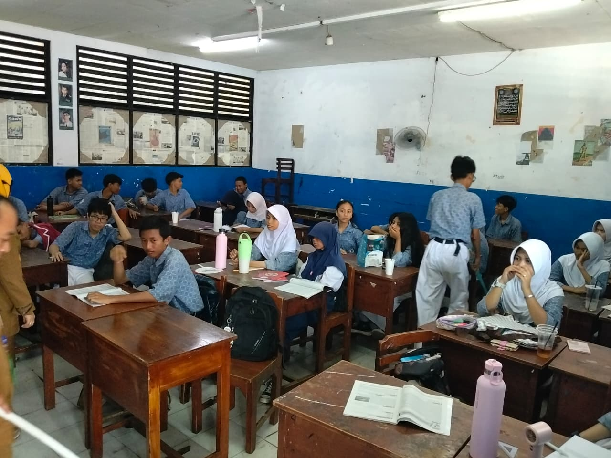
Ruang Kelas
Ruang tempat peserta didik mengikuti kegiatan belajar mengajar setiap hari.
Berdiri sejak 15 Juni 1971 di bawah naungan Yayasan Pendidikan Gita Kirtti (GIKI), SMP Gita Kirtti 2 hadir di Tanjung Priok, Jakarta Utara, untuk melayani pendidikan menengah pertama dan membentuk generasi yang cerdas, berkarakter, dan siap menatap masa depan.
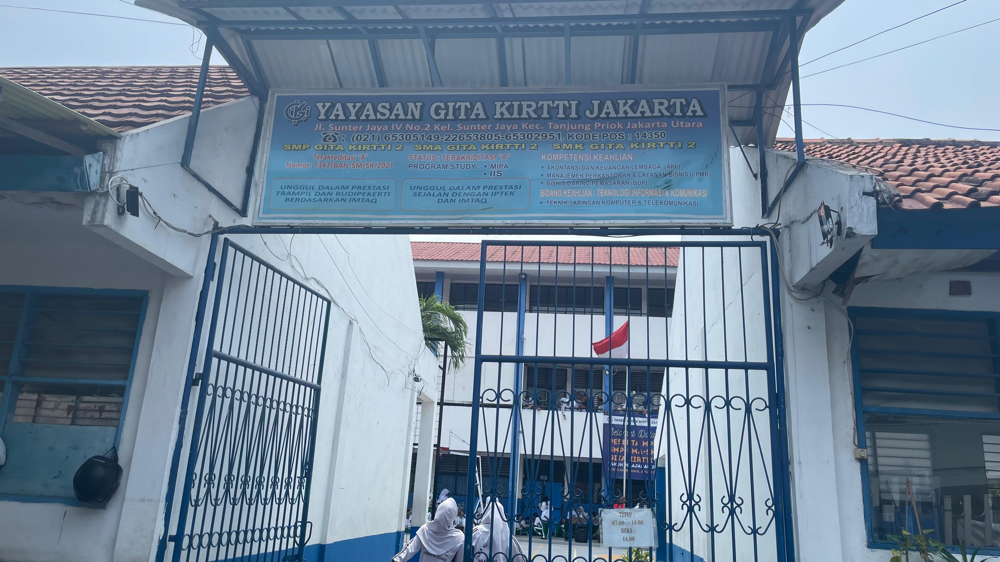
Yayasan Pendidikan Gita Kirtti (GIKI) berdiri pada 28 Desember 1958 dan sejak itu ikut mencerdaskan kehidupan bangsa melalui sekolah-sekolah yang diselenggarakannya di Surabaya, DKI Jakarta, dan Jawa Barat. Pada 2017, yayasan genap berusia 59 tahun, dan kini telah lebih dari enam dekade mengabdi di dunia pendidikan.
Di bawah naungan yayasan ini, SMP Gita Kirtti 2 Jakarta berdiri pada 15 Juni 1971 di Tanjung Priok, Jakarta Utara. Sekolah ini terus berkembang sebagai tempat peserta didik membangun pengetahuan, mengembangkan bakat, dan membentuk karakter.
Dibimbing oleh para pendidik yang berpengalaman
BP
Pend. Pancasila
Bahasa Inggris
IPA
PABP/SBK
IPA, IPS
IPS
Pend. Agama Kristen
PAIBP/SBK
Pend. Pancasila
IPA
Bahasa Indonesia
Matematika
Informatika
Olahraga
Matematika
Bahasa Indonesia
Olahraga
SBK/Prakarya
Bahasa Inggris
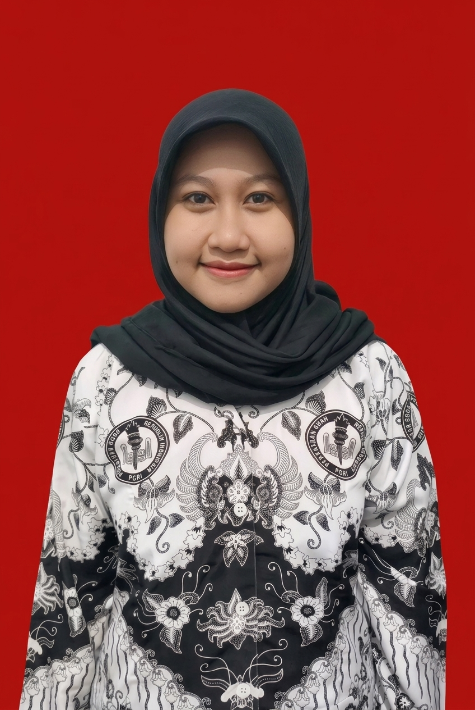
Matematika
Momen dan kegiatan siswa/siswi
Klik tumpukan foto untuk membukanya
Fasilitas yang tersedia

Ruang tempat peserta didik mengikuti kegiatan belajar mengajar setiap hari.
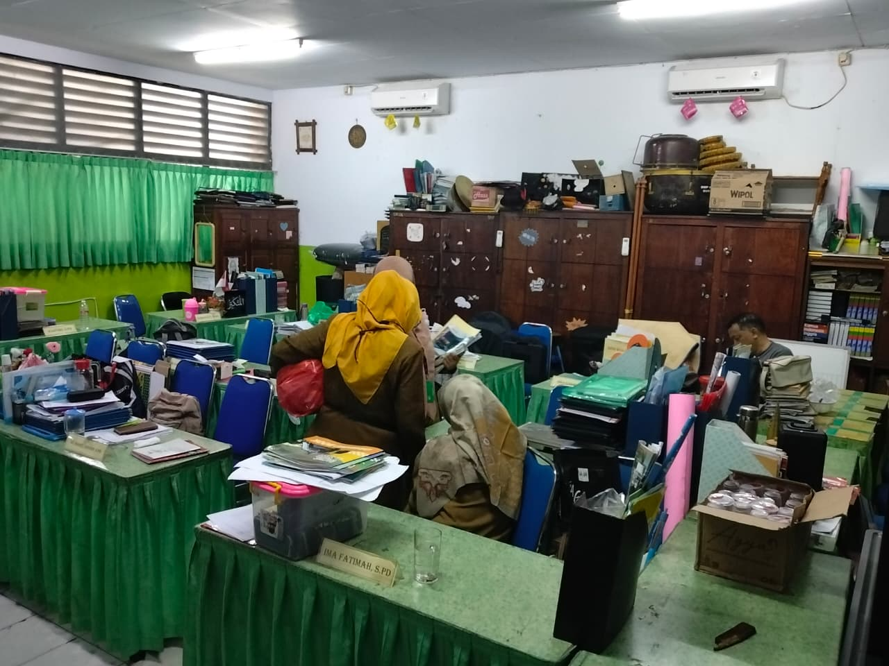
Tempat para guru menyiapkan pembelajaran dan berdiskusi dengan rekan kerja.
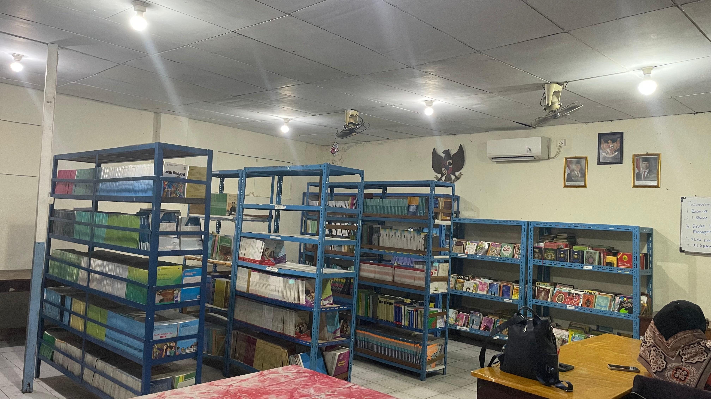
Tempat peserta didik membaca dan mencari sumber belajar tambahan.
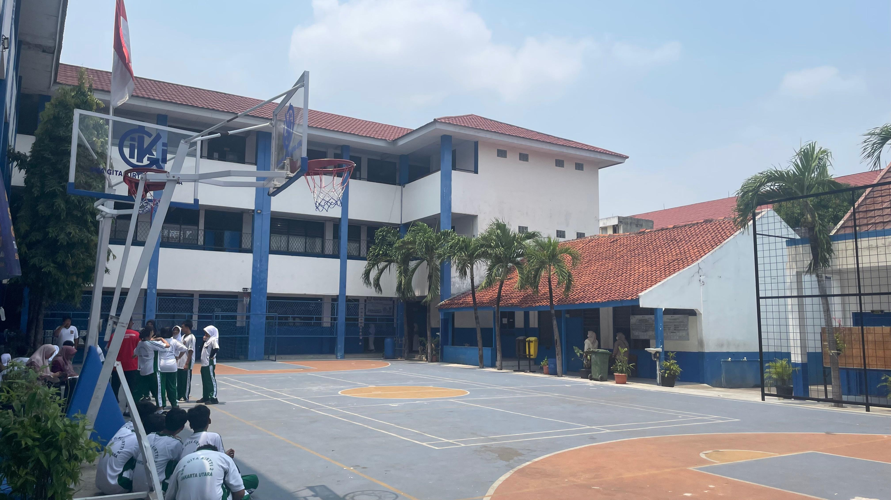
Area untuk upacara, olahraga, dan berbagai kegiatan di luar kelas.
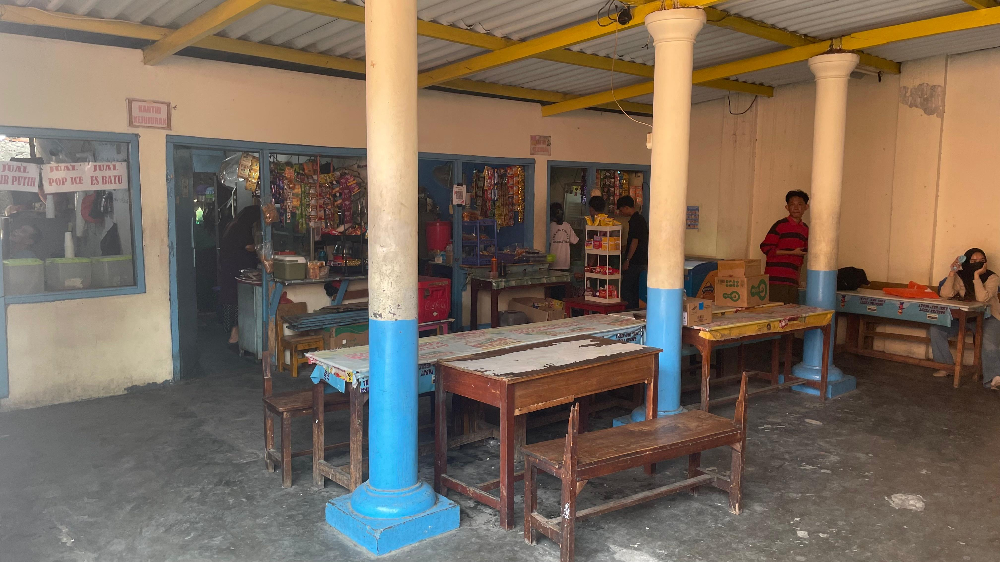
Tempat peserta didik beristirahat dan menikmati makanan serta minuman.
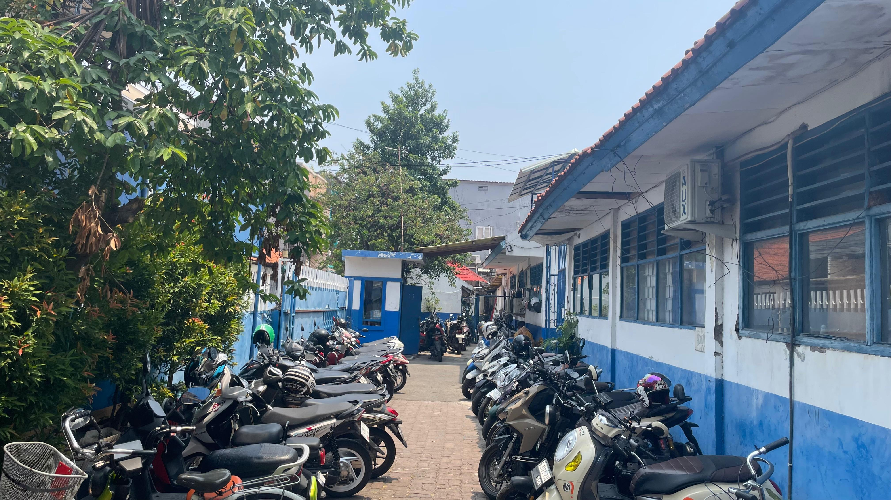
Area untuk menempatkan kendaraan guru, staf, dan pengunjung sekolah.
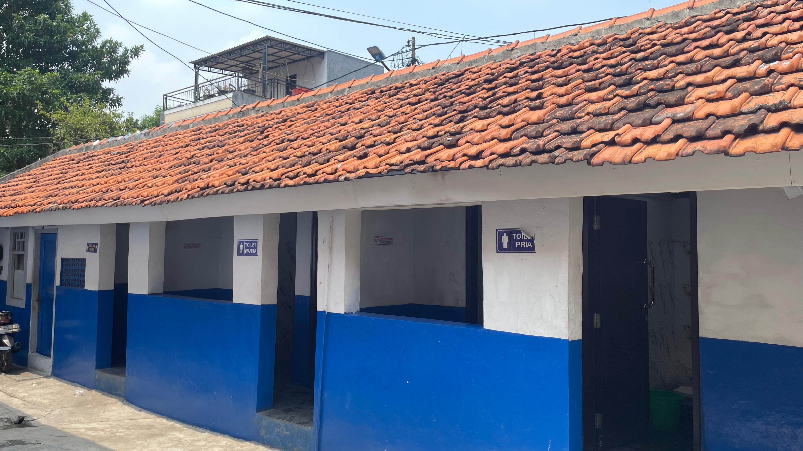
Sarana sanitasi yang digunakan oleh seluruh warga sekolah.
Ekstrakurikuler yang menyenangkan
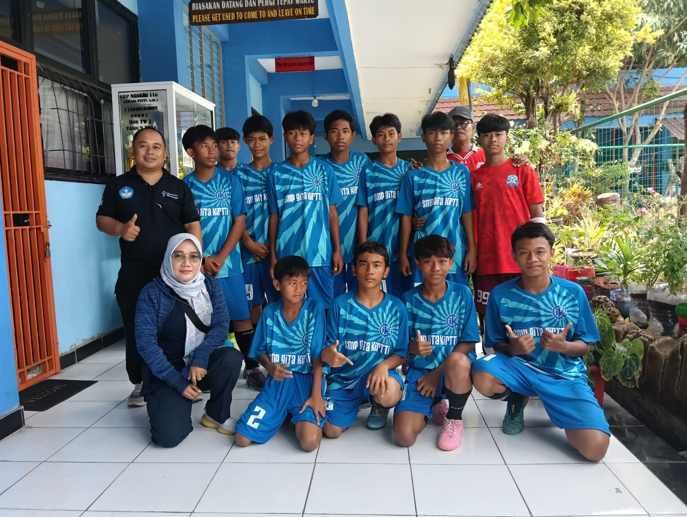
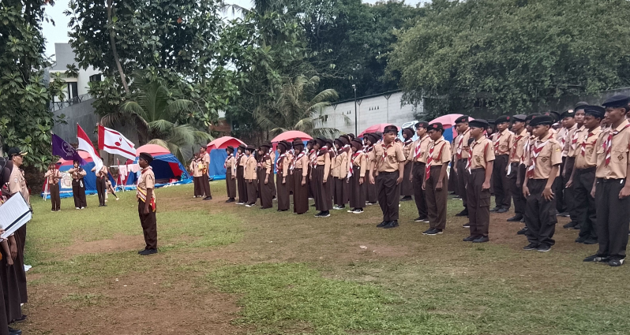
[ISI: kalimat pengantar singkat, misalnya tahun ajaran dan info umum pendaftaran]
Ada pertanyaan tentang pendaftaran? Hubungi sekolah